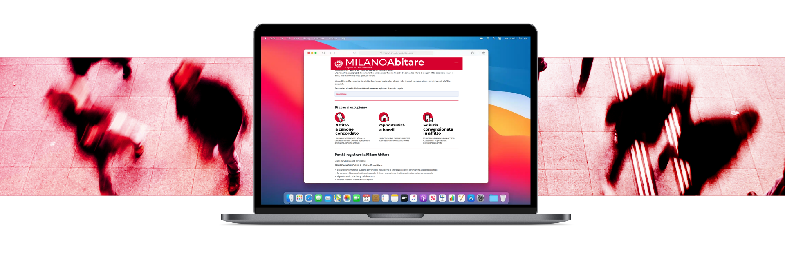
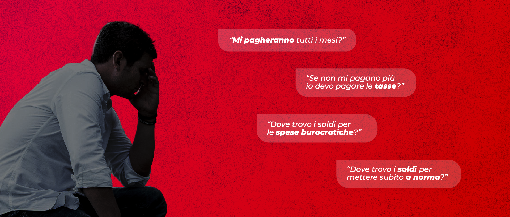
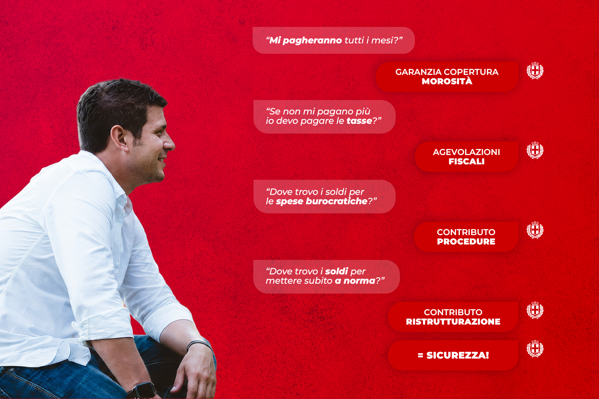
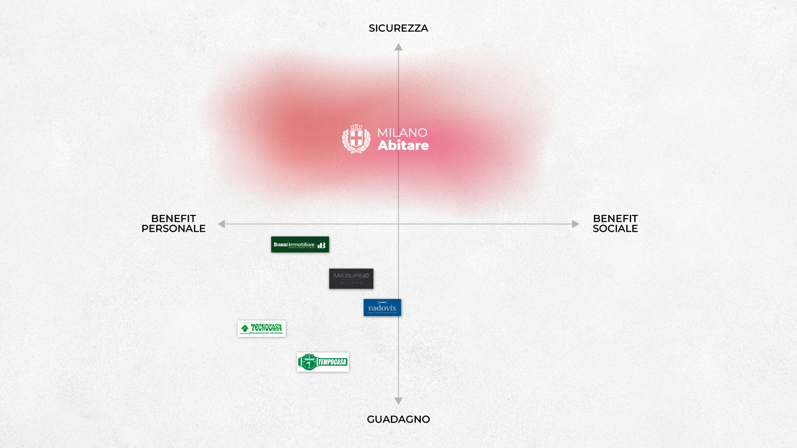
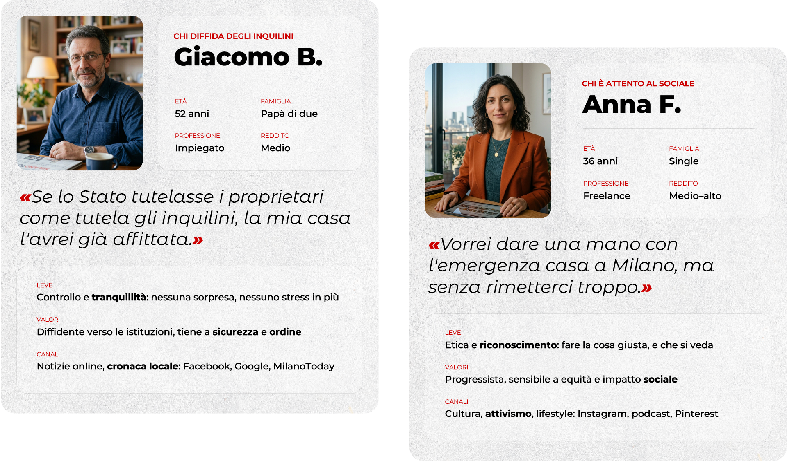
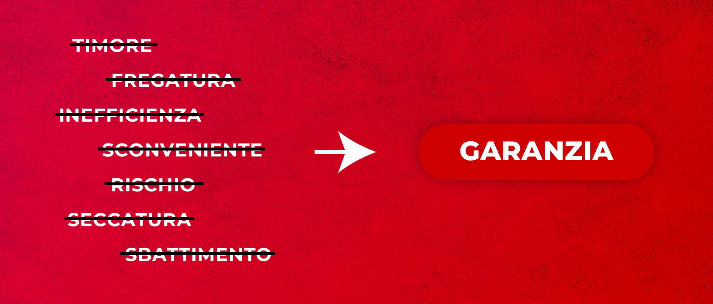
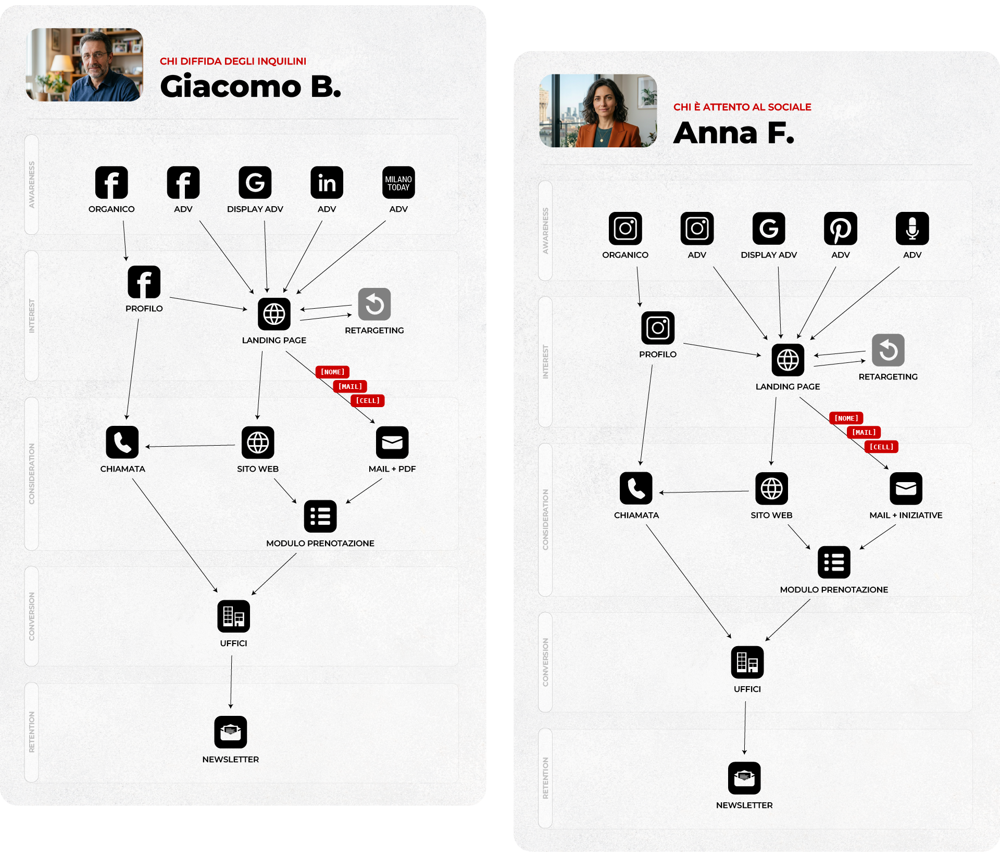
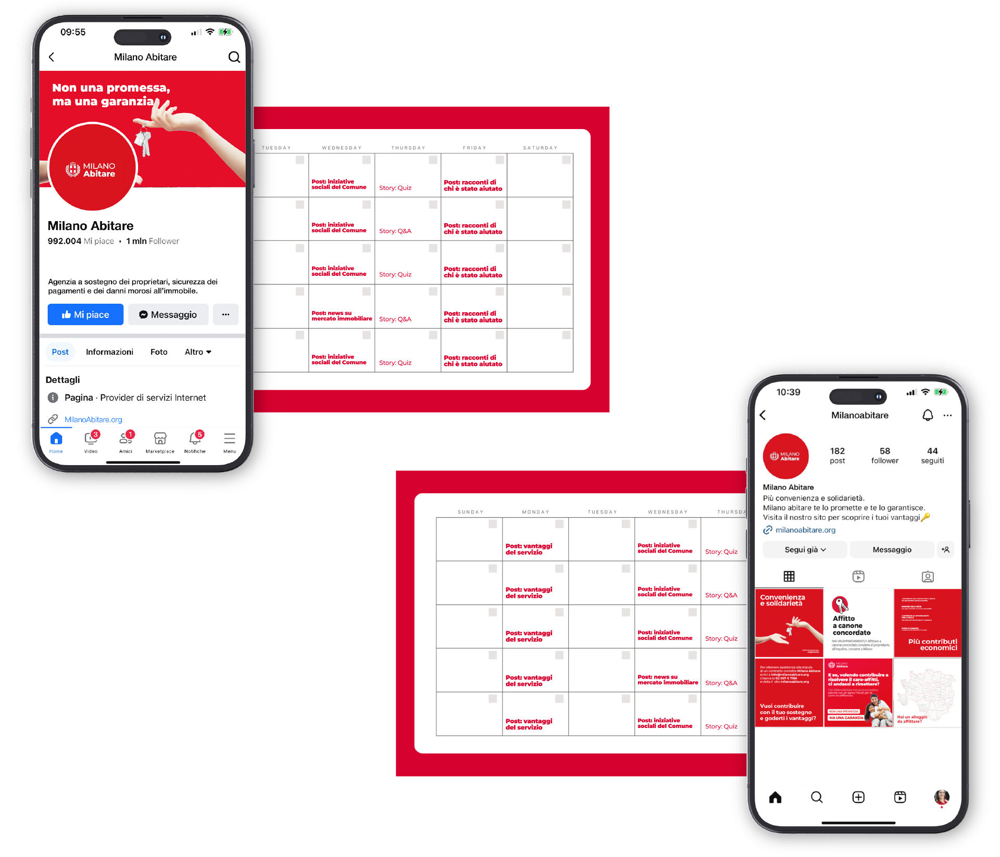
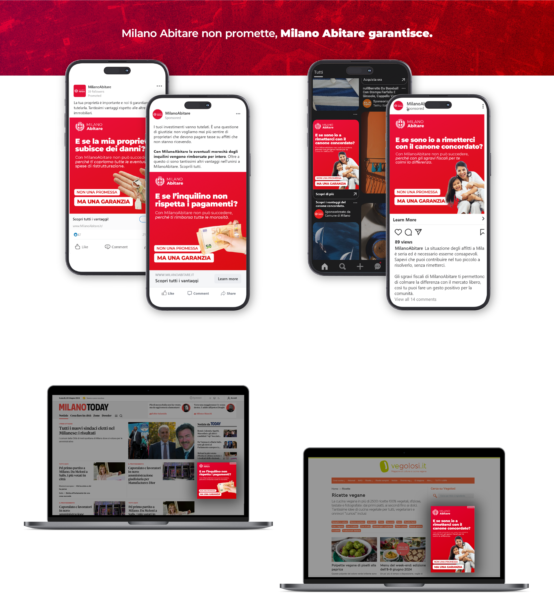

Giugno 2024
Corso di Digital Strategy, un team di sei: scegliamo Milano Abitare — il programma del Comune contro il caro affitti — e ne prendo la regia, dall'analisi alle grafiche finali. Il programma esiste, gli strumenti pure, ma la partecipazione è bassa. La domanda di partenza: quali audience coinvolgere, e con quale strategia?
Il brief non chiedeva di vendere di più, ma qualcosa di più scomodo: capire con chi parlare. È la logica di ogni brand, sociale o commerciale — quando il pubblico giusto non è ovvio, trovarlo è già metà della strategia.

A Milano la domanda di case è altissima e l'offerta scarsa, eppure migliaia di case restano sfitte: a bloccare l'offerta sono i proprietari, che non affittano per paura. Le paure sono sempre le stesse — l'inquilino che non paga e non se ne va, le tasse comunque dovute, le spese burocratiche, la messa a norma. E allora: chi risponde a queste paure?

Il vero pubblico non è chi cerca casa, ma chi una casa ce l'ha e ha paura di affittarla — e quelle paure hanno già una risposta nell'offerta di Milano Abitare: garanzia sulla morosità, contributi su ristrutturazione e procedure. Il problema non è il prodotto, è la percezione e la fiducia; e la percezione non si cambia con un nuovo servizio, si cambia con la comunicazione.


Sul guadagno i competitor vincono; sulla sicurezza — contributi, garanzie, tutele — non esistono, e quel vuoto diventa il posizionamento. Il target si restringe ai proprietari scettici, divisi in due profili: chi diffida degli inquilini, che vuole tutela individuale, e chi è attento al sociale, che la stessa tutela la lega a un beneficio collettivo. Stesso messaggio, due linguaggi.

Il differenziale diventa concept: «Non una promessa, ma una garanzia». Il meccanismo si ribalta su ogni formato — la paura del proprietario si fa domanda, la tutela di Milano Abitare si fa risposta — e si declina in due user journey: stessa promessa, paure e canali diversi per cluster.
Chi diffida degli inquilini riceve un tono diretto, leva sulla tutela individuale; chi è attento al sociale un tono valoriale, leva sull'impatto collettivo.


Il concept si declina su tutti i canali dei due percorsi — social, display, organico, sito, newsletter — con un media mix differenziato e un piano editoriale calendarizzato. Il deliverable è un documento strategico completo, ma il valore vero è la coerenza: una sola idea che regge dall'insight all'ultimo annuncio, come quando a guidare c'è una testa sola.


Il pubblico giusto aveva paura di affittare.